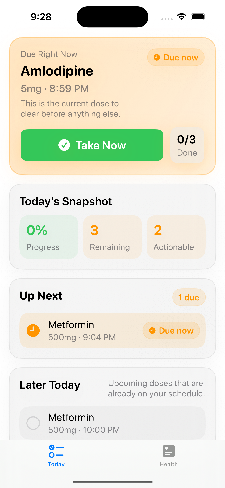
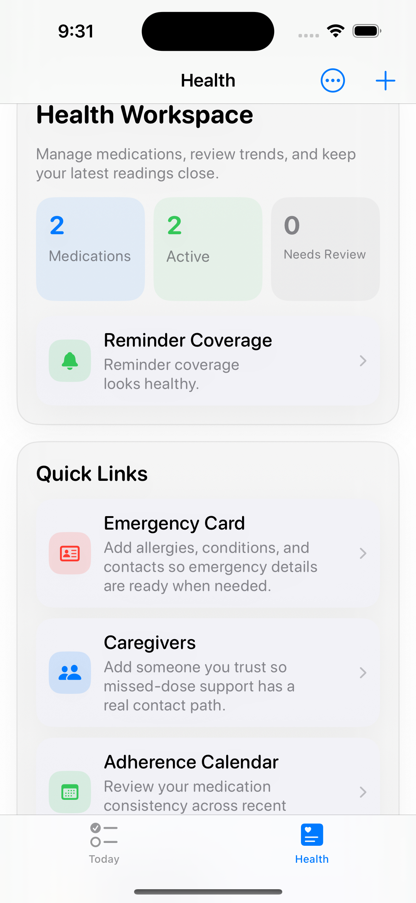
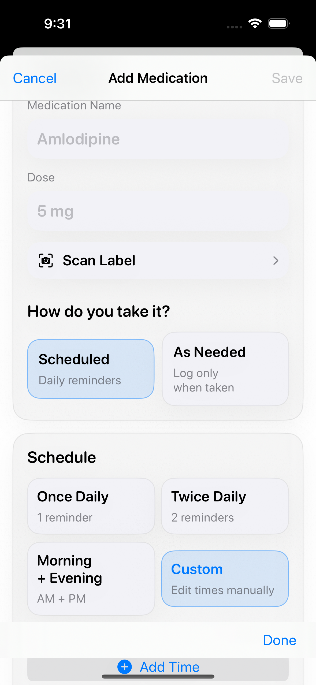

Daily dose check-ins
See what is due, overdue, snoozed, and coming up later today. Mark doses as taken, skipped, or snoozed from the Today screen.

Privacy-first iOS app
Ccare helps people manage recurring medication schedules, mark doses as taken, review reminder coverage, and keep blood pressure, glucose, weight, and heart rate logs on device.
Core Workflow
The app is built around a short loop: add medications, receive local reminders, confirm what happened, and check whether reminder coverage still looks healthy.
See what is due, overdue, snoozed, and coming up later today. Mark doses as taken, skipped, or snoozed from the Today screen.
Local notifications support scheduled reminders, snooze actions, follow-up reminders, refill alerts, and course-end reminders.
Record blood pressure, blood glucose, weight, and heart rate, then review trends alongside medication context.
Camera-based OCR can suggest medication details to reduce typing. Users confirm or edit every suggestion before saving.
Screens
Screenshots use sample medication names and sample readings. They do not contain real patient data.
Action-first view for the next dose and the rest of the day.

Medication overview, reminder coverage, emergency card, and caregiver entry points.

Fast setup for scheduled or as-needed medication routines.
Privacy
Medication schedules, intake logs, measurements, contacts, and settings are stored locally on the device. Ccare does not include advertising SDKs, analytics SDKs, or tracking frameworks.
What It Supports
Availability
The app is currently being prepared for release. You can review the privacy policy now, or inspect the source code and release progress on GitHub.